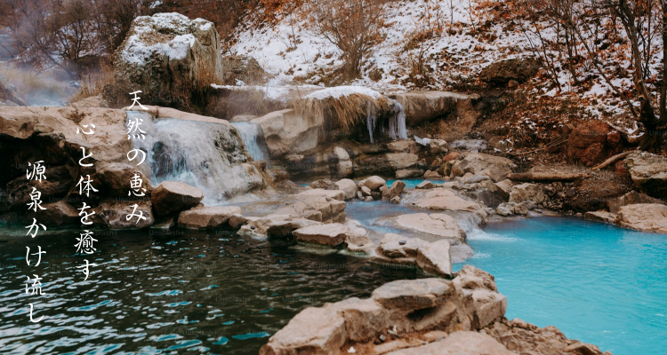
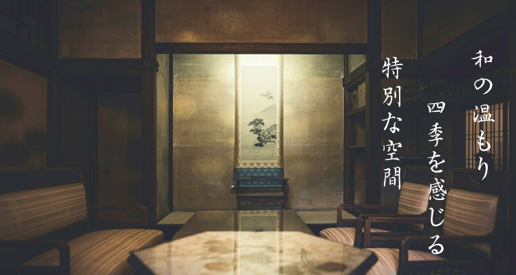
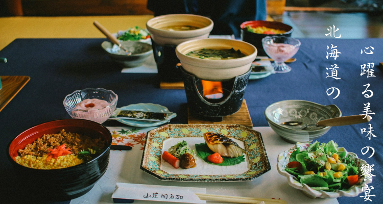
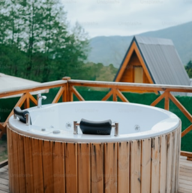
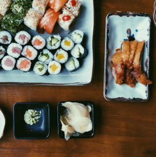
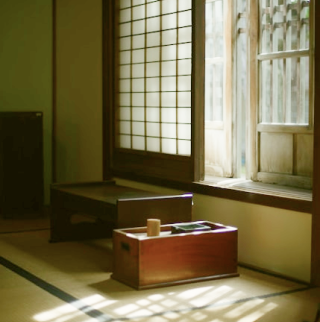

温泉
温泉
北海道の自然に囲まれた「湯宿 望彩（ゆやど ぼうさい）」の温泉は、ミネラル豊富で肌をしっとりと潤す源泉かけ流し。
四季折々の景色を望む露天風呂で心身を癒し、贅沢なひとときをお過ごしください。
客室
「湯宿 望彩（ゆやど ぼうさい）」の客室は和の趣と現代の快適さが調和した空間。
広々とした窓からは四季折々の美しい景色を楽しめ、畳の香りと木の温もりが心を落ち着かせます。静寂の中で特別なひとときをお過ごしください。
客室
「湯宿 望彩（ゆやど ぼうさい）」の客室は和の趣と現代の快適さが調和した空間。
広々とした窓からは四季折々の美しい景色を楽しめ、畳の香りと木の温もりが心を落ち着かせます。静寂の中で特別なひとときをお過ごしください。
料理
料理
「湯宿 望彩（ゆやど ぼうさい）」の料理は、北海道の旬の食材をふんだんに使用した会席料理。
新鮮な海の幸や山の恵みを巧みに生かし、一皿一皿に繊細な味わいと美しい盛り付けを施しています。
五感で楽しむ贅沢な食体験をどうぞ。
プラン
松（特別贅沢プラン）
専用露天風呂付きスイートルームと特別会席料理、ガイド付きアクティビティを堪能する贅沢プラン。
特別会席料理・専用露天風呂付スイート。
1泊2食付き 1名様 60,000円〜
竹（スタンダードプラン）
露天風呂付き和洋室に宿泊し、旬の食材を使った会席料理を楽しめるスタンダードプラン。
スタンダード会席料理・露天風呂付和洋室。
1泊2食付き 1名様 35,000円〜
梅（お手頃プラン）
和室での宿泊と地元食材を生かした和食膳を提供。手頃な価格で温泉と自然を満喫できるプラン。
和食膳・和室宿泊。
1泊2食付き 1名様 20,000円〜
※ 価格はシーズンや客室の空き状況によって変動することがございます。
詳細はお問い合わせください。
アクセス
駅から車で２時間半
北海道で過ごす穏やかな休日
JR札幌駅から車で約2時間、最寄り駅からは無料送迎バスをご利用いただけます。また、新千歳空港からは直通バスも運行しており、車でのアクセスも可能で駐車場も完備しております。
自然豊かな北海道の風景を楽しみながらお越しください。
〒080-1234
北海道美瑛町白樺通り8丁目123番地「湯宿 望彩」
お問い合わせ
お電話でのご予約ご連絡はこちら
012-345-6789
ご不明な点やご予約に関するご質問は、お気軽にお問い合わせください。
スタッフ一同、お客様のご滞在が特別なものとなるよう心を込めてサポートいたします。
お問い合わせはお電話、メール、または当館の公式ウェブサイトよりお待ちしております。